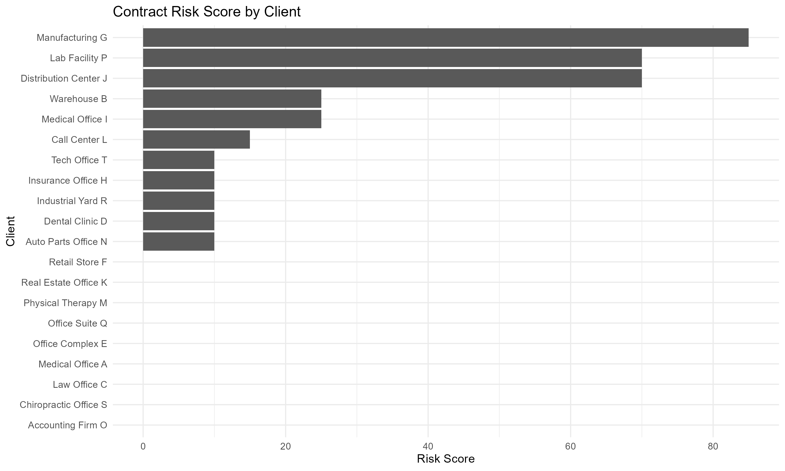
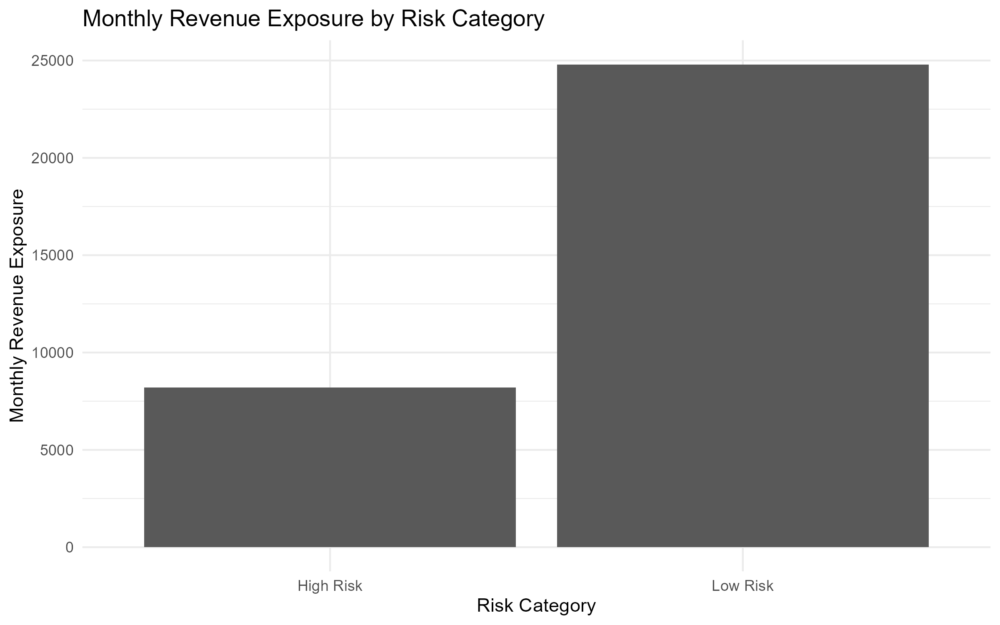
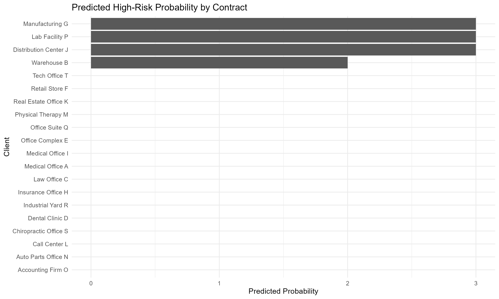

Reporting Month: 2026-03
This report treats commercial cleaning contracts as a small operating portfolio. The goal is to identify contracts with revenue exposure, margin pressure, service-quality risk, and future high-risk probability.
| client_name | industry | monthly_rate | inspection_score | complaints | estimated_margin_pct | risk_score |
|---|---|---|---|---|---|---|
| Manufacturing G | Industrial | 2750 | 80 | 2 | 31.75 | 85 |
| Distribution Center J | Industrial | 3200 | 83 | 1 | 33.59 | 70 |
| Lab Facility P | Healthcare | 2250 | 84 | 1 | 38.62 | 70 |
This section ranks contracts by estimated probability of becoming high-risk based on payment behavior, complaints, inspection scores, margin pressure, and labor hours.
| client_name | industry | monthly_rate | predicted_high_risk_probability | predicted_risk_band |
|---|---|---|---|---|
| Warehouse B | Industrial | 2400 | 1 | High Probability |
| Manufacturing G | Industrial | 2750 | 1 | High Probability |
| Distribution Center J | Industrial | 3200 | 1 | High Probability |
| Lab Facility P | Healthcare | 2250 | 1 | High Probability |
| Warehouse B | Industrial | 2400 | 1 | High Probability |
| Manufacturing G | Industrial | 2750 | 1 | High Probability |
| Distribution Center J | Industrial | 3200 | 1 | High Probability |
| Lab Facility P | Healthcare | 2250 | 1 | High Probability |
| Manufacturing G | Industrial | 2750 | 1 | High Probability |
| Distribution Center J | Industrial | 3200 | 1 | High Probability |



The main operational concern is not just whether a contract is profitable today. It is whether service quality, payment behavior, and cost pressure show early signs of future revenue exposure. Contracts with high complaints, low inspection scores, late payments, or shrinking margins should be reviewed before renewal or pricing decisions are made.